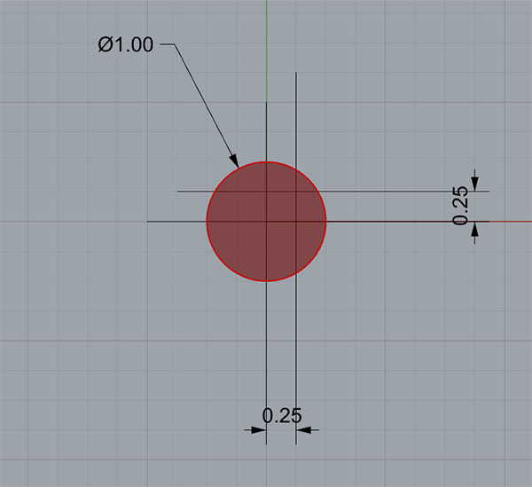

GD&T Tutorial Home GD&T Symbols
CNCCookbook Beginner's Guide to GD&T: True Position + Location Tolerancing
GD&T Position Symbol
Introduction to True Position
We've picked up a lot of fundamentals in prior chapters. You know how Datums and Feature Control Blocks work, for example. We just finished going over plus/minus tolerancing--the way most drawings that don't use GD&T are toleranced. Now let's put all of that together by taking our first look at the GD&T concepts around tolerancing positions or locations.
GD&T uses a notion called True Position when tolerancing locations. There are two forms of True Position--one for a feature size under a material condition (Maximum Material Condition or Least Material Condition), and one for True Position Regardless of Feature Size (RFS).
The GD&T Symbol for True Position is a little crosshairs:
GD&T Position Symbol
True Positions are relative to Datums, so you will want to spell out which datums in the Feature Control Block associated with a True Position.
Definition of True Position
True Position is the total permissable variation that a feature can have from its "true" position--that is, the total variation from the position if there was no error on an ideal part. Depending on how it is called out, true position can be used in a lot of different ways.
Let's make that simpler with an example. Consider the true position of the center of a hole, a very common application. Let's say the callout gives a true position tolerance of 0.0015". So how far off can the center actually be?
Be careful!
Many who are not familiar with True Position may jump to the conclusion that they just need to locate within a thou and a half (0.0015") on X and Y and all will be well. But is that really true? To understand the answer, we must understand how to calculate true position:
How to Calculate True Position
Here's the usual formula for True Position in X and Y:
True Position = 2 x SQRT(XVAR^2 + YVAR^2)
So, we take the difference in X (difference between actual and measured X), square it, add that to the difference in Y squared, take the square root of that sum and multiply by 2.
Let's say we're off by 0.0015 in both X and Y. That gives us:
True Position = 2 x SQRT( 0.0015^2 + 0.0015^2) = 0.004243
We're off from the 0.0015 True Position tolerance by almost 2x!
Even with half the differences, so X and Y are within 0.00075" of the true center, the True Position still works out to be 0.002121".
True Position can be tougher than it looks on first glance!
Since a picture is worth a thousand words, geometrically, what we've been talking about looks like this:

The Red Circle is the tolerance zone for the hole center...
In this example, the Red Circle is the tolerance zone for the hole center. The True Position is 1.00 (keeping it in round numbers to make it easier to scale your real numbers and see what all this means). The measured position of our holw differs from True Position by 0.25 in both X and Y. So the True Position in this example would be 0.7071, which is within the 1.00 called out for the True Position--we're okay!
Now let's relate that True Position back to convention plus/minus or limit dimensions.

Traditional plus/minus tolerancing must fit inside the yellow square...
If we were using traditional plus/minus tolerancing, we would use something along the lines of the yellow square. It's sides in this case are 0.71" (at this precision, it's actually the square root of 0.5, the circle's radius), so we'd use plus or minus half that to get plus or minus 0.355. Here's the rule of thumb to memorize:
You only have a little more than a third of True Position in each dimension for your plus/minus tolerance. About 35% to be more exact.
Now you may have heard people say that GD&T actually lets us use looser tolerances so parts are cheaper to make. This diagram makes that clear. If we can only use plus/minus tolerancing, all we can do is use the square, which is forcing us to a smaller area in which our actual hole center must fit: the area of the yellow square is certainly less than the red circle. In fact, it is quite a bit less.
Because we have to hit a larger error with GD&T's True Position concept, it's easier. Look at it this way--the 4 areas of the True Position Tolerance Zone that are outside the plus minus tolerance zone make it clear that there are places where one of the two plus/minus tolerenaces could be broken and the feature would still be within tolerance!
Using a circular tolerance zone instead of a square one also makes more sense if you think about it. Why are we trying to hit that area? Perhaps because we want a round pin to fit in a round hole. Why then would squares have anything to do with it? GD&T just makes better geometric sense too.
True Position is More Work to Measure (Unless You Have a CMM or Probe)
But, I hear the wheels turning out there among you, dear readers. You are a little miffed at all the calculating that has to take place. You're probably also wondering how long it'll take you to get used to eyeballing numbers like these and having a good feel for what's going on (just remember that 35% figure for comparison!). With the old plus/minus tolerancing, it was easier to measure tolerances and easier to get a gut feel for what was going on.
Well, yes, you are right, but you will get used to it and if you have a probe or CMM (Coordinate Measuring Machine), they'll do all those pesky calculations for you. In fact, if you even just have G-Wizard, it'll do those pesky calculations too:
G-Wizard True Position Calculator
G-Wizard, our Feeds and Speeds Calculator, is chock full of useful utilities. One of them is a True Position Calculator:
G-Wizard has a handy True Position Calculator built right in!
Using the True Position Calculator could not be easier. Just enter the difference between actual and ideal position in X, Y, and Z and it'll tell you True Position. Don't have a Z datum for the True Position? No worries, just leave it 0.
If you're thinking a calculator like G-Wizard might be pretty handy, welcome to the club. There are thousands of CNC'ers who use it every day. But here’s something else–you can get lifetime access to all the reference materials except the Feeds and Speeds Calculator when you buy the 1 year subscription for $79. That’s all it costs to have all the upgrades, customer service, and use of the product for life!
So what’s the catch? Why does anyone ever pay more than $79?
Many hobbyists don’t pay more than $79, BTW. The catch is a spindle power limit. When you buy the 1 year G-Wizard for $79, you get 1 year of unlimited spindle power for Feeds and Speeds. When that expires, you get a spindle power limit of 1 HP. That limit is based on however many years you subscribe for. You can increase it any time you like by renewing the subscription. Or, if you don’t like subscriptions, you can also by the product outright. And we never charge for updates or customer service.
So go ahead, give G-Wizard a free 30 day trial. You’ll be surprised at all the time it saves you on things like True Position, not to mention the other handy reference materials but also the longer tool life, better surface finish, and shorter cycle times you’ll get from better Feeds and Speeds.
Where Can True Position Be Used?
True Position is about tolerancing positions, so it makes sense to use it in terms of an axis, point, or plane. True Position can be 2 or 3 dimensional (and will need an appropriate number of corresponding datums). Usually, you specify the exact point where your position should be and use True Position to tell how far away from that position is acceptible.
Using True Position With Material Conditions (MMC/LMC)
When you can combine True Position with Maximum Material Condition (MMC), it allows you to control location, orientation, and size of the feature all at once--GD&T can be very concise! This combination (True Position + MMC) is also helpful for making it easy to create functional gages to inspect the feature on parts.
True Position For X or Y (Non-Diameters, No Ø Symbol)
True Position is most commonly used for diameters, for example, to locate the center of a hole. However, when used without the Ø symbol, it just indicates tolerance for an X or Y dimension. In other words, it is the distance from the ideal X or Y.
You don't want to do this very often, particularly if the diameter version could've been used because you're changing those circular tolerance zones into square tolerance zones.
True Position on Drawings
By now you're grasping the basics of how True Position works. Let's get a good look at how it appears on drawings with an example:

True center position of the hole regardless of feature size...
The drawing above has a hole whose center is at X = 10, Y = 5. The True Position of that center is 0.02. The A and B datums are clearly marked and so things are straightforward.
If we wanted to specify the Maximum Material Condition, that would simply be added to the Feature Control Block. What if we added it hear? Knowing the True Position is at MMC would let us construct a functional pin gage. The diameter of the pin would be the nominal diameter of the hole minus the MMC True Position Tolerance. Likewise, we'd position that pin at X = 10 and Y = 5 since the MMC took care of both size and position for our gage.
Using MMC with True Position can be very handy!
Conclusion
True Position is a pretty nifty alternative to plus/minus tolerances. Not only does it make more geometric sense, it actually allows you to make parts that fit more cheaply because the tolerance zone you have to hit (the round circle) is bigger than the typical tolerance zone plus/minus tolerancing allows (the square one).
Onward, we've got more GD&T to show you!
GD&T Tutorial Home GD&T Symbols